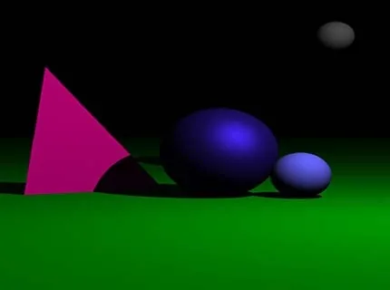

A from-scratch CPU ray tracer that turns scene descriptions into images by simulating how light bounces between a camera, geometry, and light sources. No graphics libraries — just vectors, materials, and a lot of recursion.

Real-time graphics APIs hide the math: you bind a shader, push some matrices, and pixels appear. I wanted to understand the actual physics — how a single pixel knows what colour to be — so I built a renderer with no graphics libraries at all. Just C++, vectors, and the rendering equation.
The result is a small, dependency-free CPU ray tracer that produces photorealistic images of spheres, planes, and meshes with reflections, refraction, soft shadows, and antialiasing.
For each pixel, the camera fires a primary ray into the scene. The closest hit determines the surface; the surface's material decides whether to shade locally, reflect, refract, or all of the above. Reflections and refractions spawn secondary rays, and the colour bubbles back up the call stack.
Per-pixel ray casting from a pinhole camera with adjustable FOV. Closest-hit detection over spheres, planes, and triangle meshes.
Phong + Blinn-Phong with ambient, diffuse, and specular terms. Per-light shadow rays for hard shadows; jittered samples for soft shadows.
Recursive mirror rays bounded by a configurable depth. Roughness-driven cone sampling for glossy surfaces; perfect mirrors at depth 0.
Snell's law for transmissive materials with index-of-refraction per surface. Schlick's approximation drives the Fresnel mix between reflection and refraction.
Supersampled AA. NxN sub-pixel jittered samples averaged per pixel — the single biggest visual quality win for the smallest amount of code.
Bounding-box pruning for mesh hits. Intersection routines were the hot path, so I templated the math types and inlined the dot/cross helpers.
// Core recursion — abridged from the actual implementation Color trace(const Ray& r, int depth) { if (depth > MAX_DEPTH) return Color{0,0,0}; Hit h; if (!scene.intersect(r, h)) return background(r); Color local = shade(h, scene.lights); // Phong + shadow rays Color refl = h.material.kr > 0 ? trace(reflectRay(r, h), depth + 1) // recursive reflection : Color{0,0,0}; Color refr = h.material.kt > 0 ? trace(refractRay(r, h), depth + 1) // Snell's law : Color{0,0,0}; double fresnel = schlick(r.dir, h.normal, h.material.ior); return local + fresnel * refl + (1 - fresnel) * refr; }
The final renderer produces clean, physically plausible images of spheres-on-a-plane scenes with reflective and glass materials, soft shadows, and 4×4 supersampled AA — all without a single line of OpenGL, Vulkan, or DirectX. Render time on a modern laptop is a few seconds for a 1080p frame at moderate sample counts.
More importantly, the project replaced "graphics is magic" with "graphics is recursion plus linear algebra," which is the actual lesson I wanted out of it.